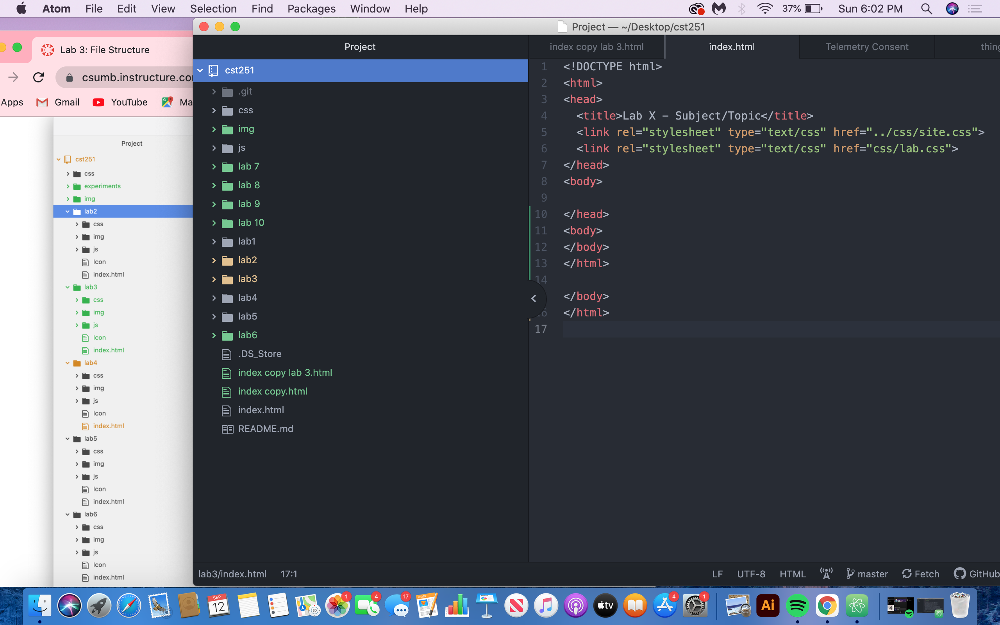

The main purpose of lab 3 was to create a local file structure. we worked together in groups of 2 inorder to accomplish this task.
creating the file structure was not too difficult however i did have a tough time trying to organize my files within atom.I tried moving them around and re-aranging them but I was unsuccessful at aranging them.
shown below is my finished file structure
